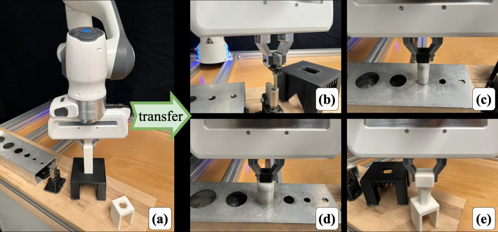
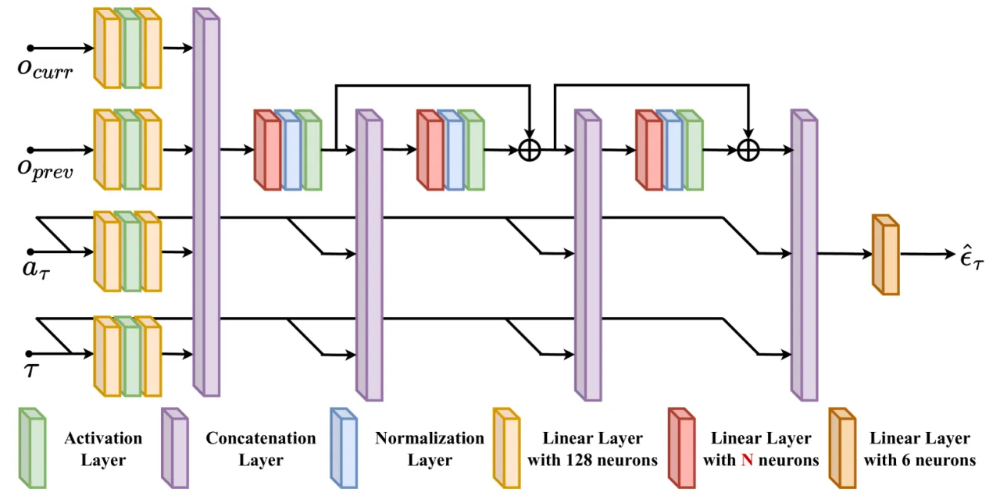
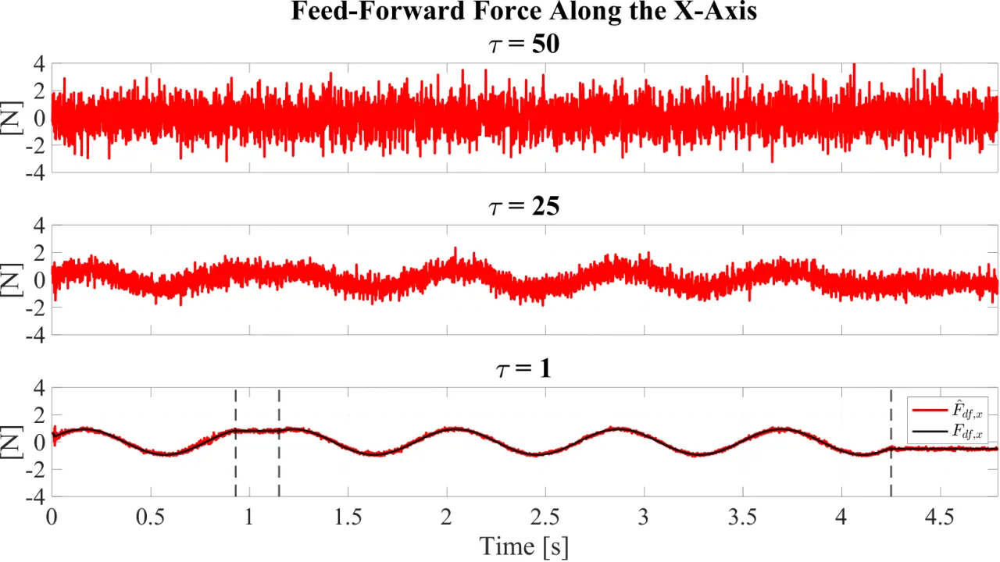
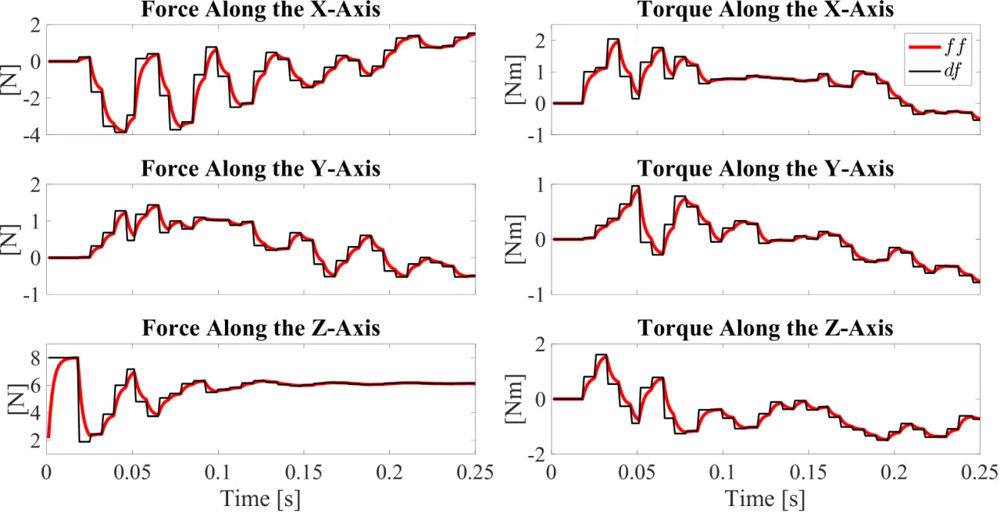
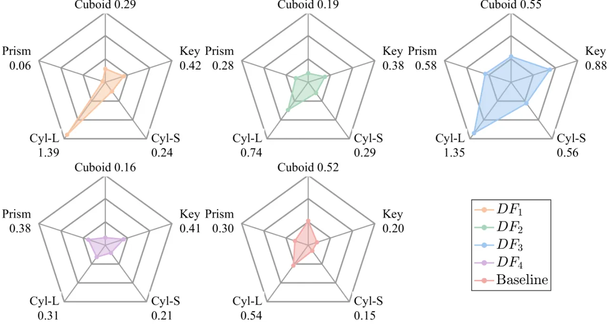
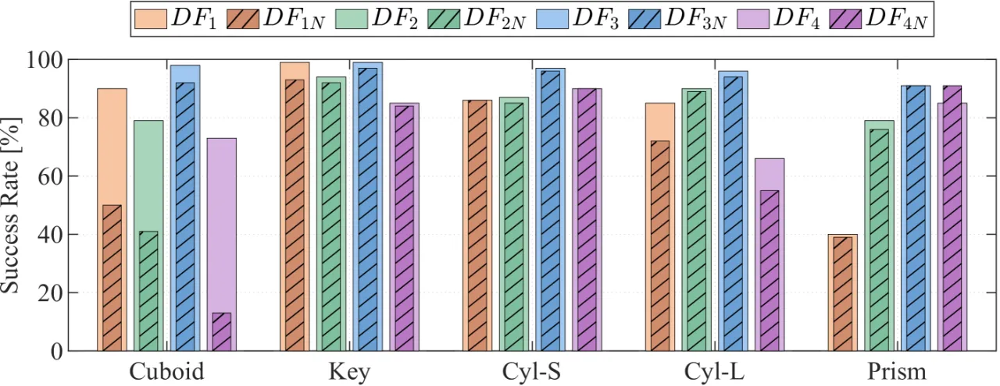

与主流「视觉→位姿」扩散策略不同，TacDiffusion 让 diffusion model 直接在力域生成 6D wrench（力/力矩），作为阻抗控制的 feed-forward 项。它只在一个任务上示教学习，就能 zero-shot 迁移到多种从未见过的高精度装配任务，平均成功率 95.7%；并用一个 dynamical-system 滤波器解决扩散策略与实时控制回路之间的频率不匹配，使成功率再提升 9.15%。
装配（assembly）是现代制造与服务机器人的核心技能，但要学到一种能跨任务迁移的高精度插装技能仍然很难：孔轴间隙常小到 0.1 mm，纯视觉难以提供足够精度，而针对单一零件调好的策略往往换个形状就失效。作者提出：把 diffusion model 用在力域——直接生成机器人应施加的 6D wrench，而不是位姿或像素动作——从而继承其前作 behavior-tree 插装技能的自适应性，同时获得扩散模型的强表达能力。
“This paper presents a novel framework that utilizes diffusion models to generate 6D wrench for high-precision tactile robotic insertion tasks. It learns from demonstrations performed on a single task and achieves a zero-shot transfer success rate of 95.7% across various novel high-precision tasks.”

框架分三层：(1) 一个 DDPM 扩散模型作为「力控专家」，从触觉观测中去噪生成 6D wrench Fdf；(2) 一个 dynamical-system 滤波器，把低频的扩散输出平滑地插值到 1000 Hz 控制回路，得到实际下发的 feed-forward 力 Fff；(3) 把该模型嵌入 behavior-tree 插装技能，替换原有子树，继承自适应切换 primitive 的能力。

观测由外部 wrench、内部 wrench 与末端速度组成（18 维），动作是 6 维 feed-forward 力，示教自专家策略。训练即标准 DDPM 去噪目标：
“𝓛DDPM = 𝔼[‖ε̂τ(o, aτ, τ) − ετ‖²₂]”
超参数：Epoch 1500、Batch 4096、learning rate 10⁻³、diffusion horizon T = 50、diffusion weight βτ 从 10⁻⁴ 递增到 10⁻²。推理时从纯噪声逐步去噪得到 wrench。

扩散模型推理频率只有 ~50–500 Hz，而阻抗控制回路要 1000 Hz。若直接把离散、低频的扩散输出下发，会产生台阶状突变。作者用一个二阶动力系统把 Fdf 平滑插值成连续的 Fff：
“F̈ff = α(β(Fdf − Fff) − Ḟff)” （论文取 α=0.9, β=0.3）
随后 Fff 进入阻抗控制律 τm = Jᵀ[Fff + K·e + D·ė + M·ẍd] + C·q̇ + g 作为前馈力项。

作者把扩散模型接入其前作的 behavior-tree 插装技能，「replacing the original sub-tree」。由此模型「inherits the self-adaptability of our previous method, selecting appropriate primitives based on the assembly state」——例如根据实时触觉在对准时做 wiggle 动作、在需要时施力，从而对新零件也能自适应。
在真实机器人上做 tight-clearance 插装：仅用 cuboid 一个零件示教训练，测试则包含训练零件（cuboid）与 4 个从未见过的新零件（Key、Cyl-S、Cyl-L、Prism）的 zero-shot 迁移。对比 4 个不同容量的扩散模型 DF₁–DF₄。
| Model | Neurons (N) | Final Loss | Inference Freq. |
|---|---|---|---|
| DF₁ | 128 | 0.2751 | 503.8 Hz |
| DF₂ | 256 | 0.1653 | 297.5 Hz |
| DF₃ | 512 | 0.0716 | 141.8 Hz |
| DF₄ | 1024 | 0.0288 | 51.2 Hz |
| Model | Cuboid (trained) | Key | Cyl-S | Cyl-L | Prism | Average (novel) |
|---|---|---|---|---|---|---|
| DF₁ | 90.0 | 99.0 | 86.0 | 85.0 | 40.0 | 77.5 |
| DF₂ | 79.0 | 94.0 | 87.0 | 90.0 | 79.0 | 87.5 |
| DF₃ | 98.0 | 99.0 | 97.0 | 96.0 | 91.0 | 95.7 |
| DF₄ | 73.0 | 85.0 | 90.0 | — | — | — |
DF₃（512 神经元）综合最优：在 4 个新任务上平均 95.7%，几乎每一项都取得最高成功率。太小的 DF₁ 在最难的 Prism 上骤降到 40%（表达力不足）；太大的 DF₄ 推理只有 51.2 Hz，实时性变差反而拖累成功率——体现出「inference ability vs. speed」的权衡。

对比每个模型「带滤波」与「不带滤波」（图中 DFi vs. DFiN）。滤波器整体带来 “significantly improving the task success rate by 9.15%”，对小模型尤其关键——DF₁/DF₄ 在最难的 Cuboid/Prism 上去掉滤波后成功率大幅塌陷。

论文明确给出「a practical guideline regarding the trade-off between diffusion models' inference ability and speed」：模型太小表达力不足（DF₁ 在 Prism 仅 40%），太大则推理频率过低（DF₄ 51.2 Hz）损害实时控制，需要像 DF₃ 这样折中；未来工作聚焦把框架扩展到「a broader range of high-precision assembly tasks」。
方法通过模仿 behavior-tree 专家策略学习，观测依赖外部/内部 wrench 与末端速度，因此隐含要求高质量力控示教数据与可靠的力/触觉估计；纯位置控制或无力反馈的平台难以直接套用。
实验局限于刚性 tight-clearance 插装，且仅用一个 cuboid 示教；对柔性件、多步/多阶段装配或差异更大的几何形状的泛化尚未验证。
DS 滤波器的 α、β 及阻抗控制的 K、D 为人工选定的固定值，跨平台或跨任务时可能需重新调参，论文未讨论其自动化。